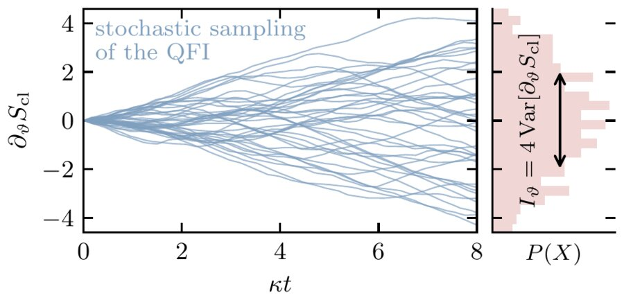
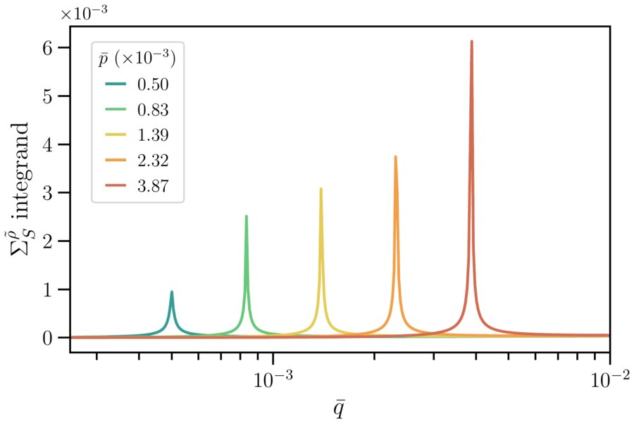
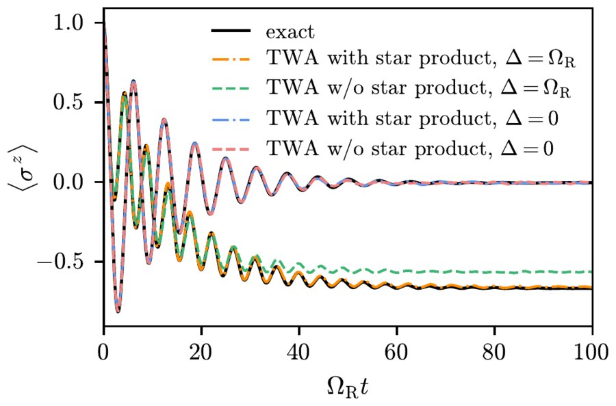
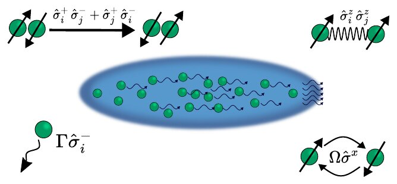
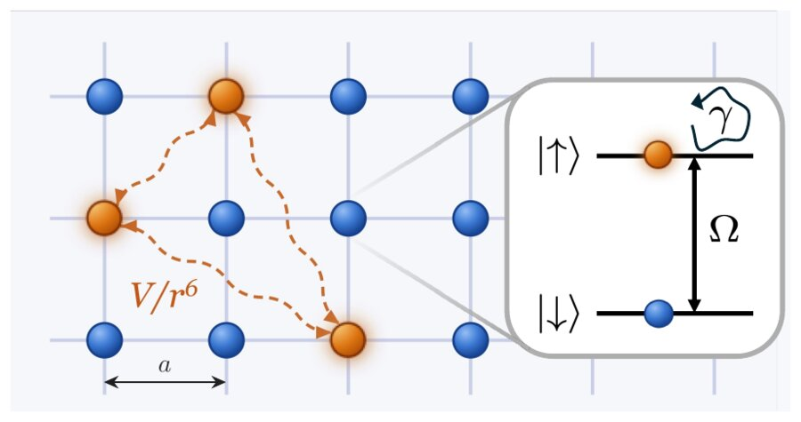
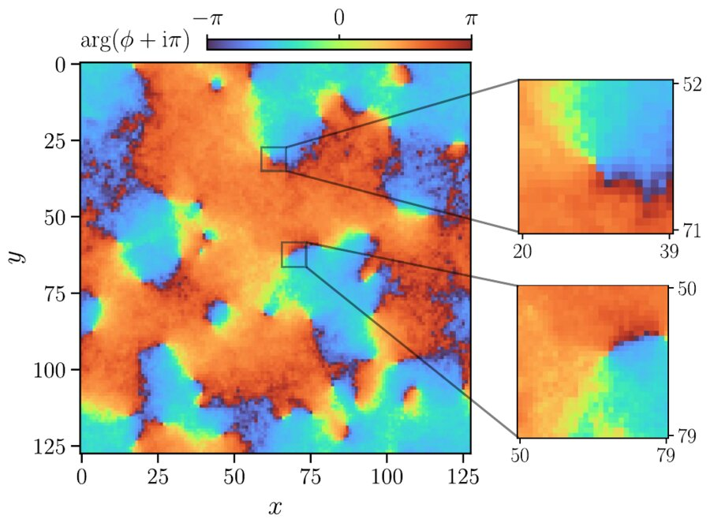
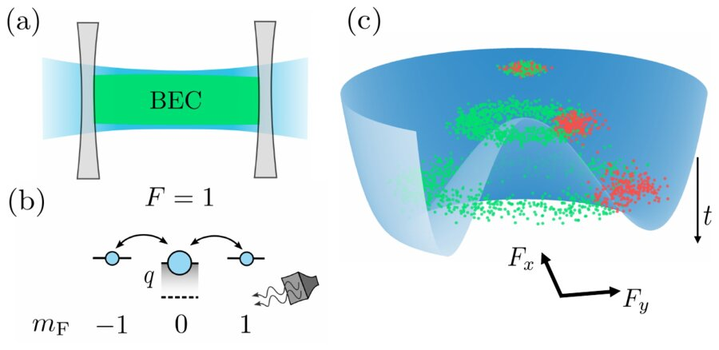
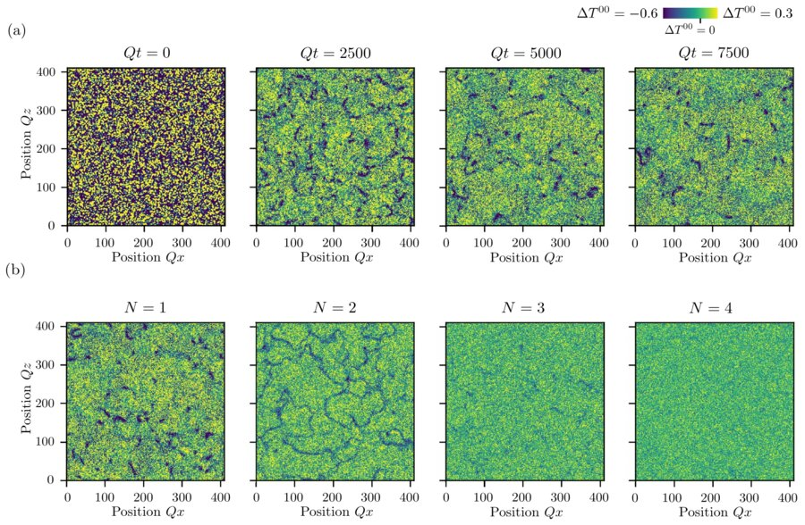
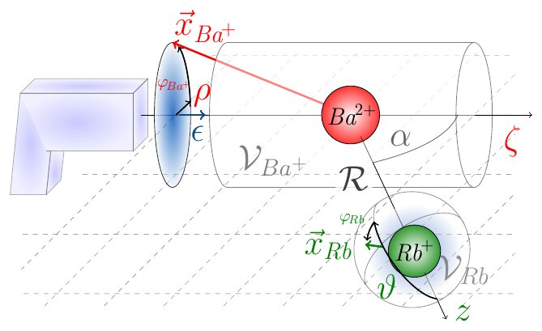

Publications
2026
-
arXiv

Quantum Fisher information of driven-dissipative systems from Keldysh path integrals -
arXiv

Nonthermal fixed point for massless scalar field theories -
arXiv

Path integral approach to the truncated Wigner approximation of driven-dissipative spins -
arXiv

Truncated Wigner approximation for spins in continuous phase space -
New J. Phys.

2025
-
Phys. Rev. Research

-
SciPost Phys.

2024
-
Phys. Rev. D

2023
-
arXiv

Time-resolved rubidium-assisted electron capture by barium(II) cation